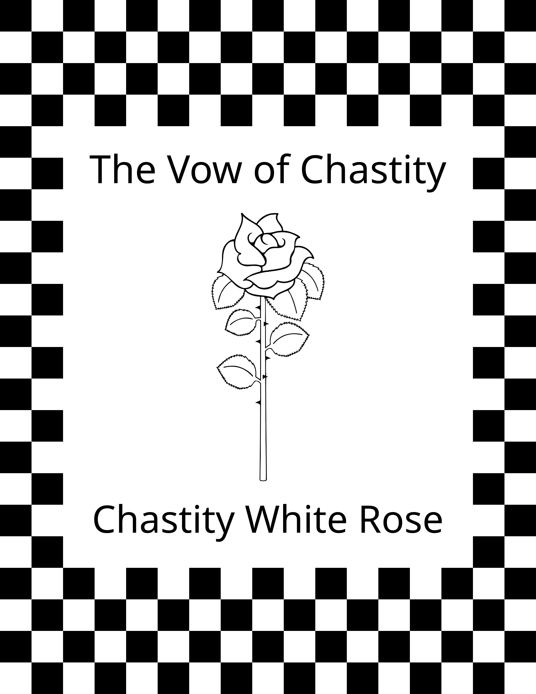
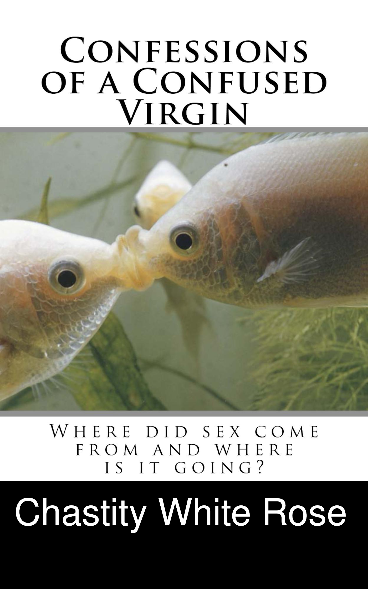

This is my best book. It is the story of me talking to a unicorn named Honesty in my dreams. It is the most important book of everything I have written. So if you read only one, make it this one.
This book is mostly a rant about all the reasons I will never have sex. I got so tired of people pushing their sexiness on me and telling me what I should do that I snapped and wrote this very emotional book that explains why I vowed celibacy/chastity.
This is the very first book I wrote. I was young and confused, and I still am!
These three books are not the only ones I have written, but they are what I consider to be the best of my books. They are all available on my Smashwords profile in ebook form. Paperbacks are available through Amazon. You can either search for them by title or you can try clicking on the cover images displayed above because they are also hyperlinks that take you to the Amazon page for them.